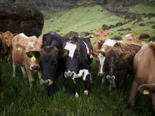

doðu anadolu BÖLGESÝ HAYVANCILIK
Hayvancýlýk
Doðu Anadolu Bölgesi, hayvancýlýkta elveriþli þartlara sahip olduðu gibi olumsuz þartlar da taþýr. Çayýr ve otlaklarýn fazla yer kaplamasý hayvancýlýðý teþvik edici, kýþlarýn uzun ve sert geçmesi ise sýnýrlayýcý bir özelliktir. Erzurum-Kars Bölümü'nde yaz yaðýþlarý ile oluþan çayýrlarýn geniþ alan kaplamasý büyükbaþ hayvancýlýðýn geliþmesini saðlamýþtýr.
Bölgenin güneyindeki ovalýk alanlarda ise küçükbaþ hayvanlardan koyun yetiþtiriciliði önem kazanmýþtýr. Daðlýk yörelerde ise kýl keçisi yetiþtirilmektedir. Canlý hayvan, yapaðý, tereyaðý ve peynir halkýn önemli geçim kaynaklarýdýr.
Hakkâri, Kars ve Bitlis'te arýcýlýk geliþmiþtir. Türkiye bal üretiminin %20'sini Doðu Anadolu Bölgesi verir.
